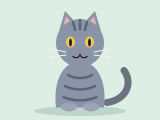

Nuestras mascotas
Conoce a algunos de los pacientes que han pasado por nuestra clínica.

Consejos de salud
Algunas recomendaciones breves para el cuidado de tu mascota en casa.
Recordatorios
Escucha nuestro mensaje con los cuidados esenciales para tu mascota esta temporada.
Transcripciones
📝 Ver transcripción del video
Consejos de salud para tu mascota:
Mantén al día su calendario de vacunación. Llévala al menos una vez al año al veterinario. Proporciónale agua fresca y limpia todos los días. Aliméntala según su edad y tamaño. No le des alimentos tóxicos como chocolate, cebolla o uvas. Haz que haga ejercicio regularmente. ¡Gracias por cuidar a tu mascota!
📝 Ver transcripción del audio
Recordatorio de vacunación:
Hola, este es un recordatorio amable de que la vacuna antirrábica debe aplicarse cada año. No olvides también desparasitar a tu mascota cada tres meses si sale al exterior. Si tienes dudas sobre su próximo turno, no dudes en llamarnos. ¡Gracias por confiar en ConSentidos!